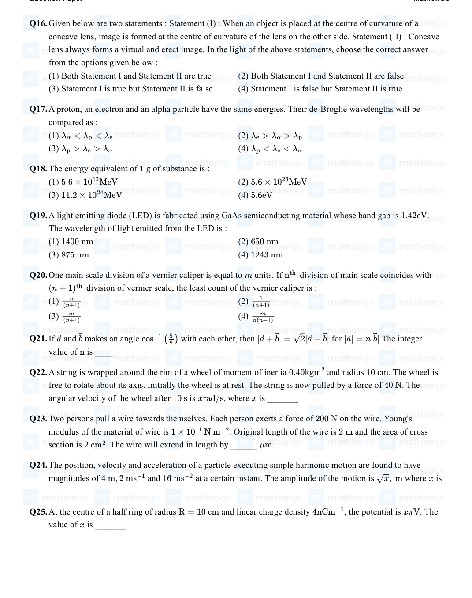
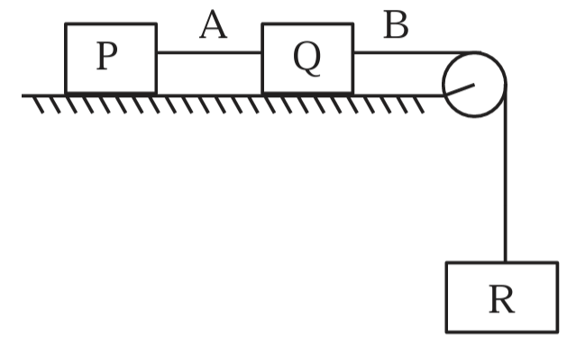

Filter questions
Q1
PHY-2021-0101-S1-Q015
2021 | 17 Mar | Shift 1
—
Integer
The thickness at the centre of a plano convex lens is 3 mm and the diameter is 6 cm. If the speed of light in the material of the lens is 2 × 108 m s−1. The focal length of the lens is ___________. (1) 0.30 cm (2) 15 cm (3) 1.5 cm (4) 30 cm
Answer: 4
Q2
PHY-2021-0101-S1-Q029
2021 | 20 Jul | Shift 1
—
Integer
An object viewed from a near point distance of 25 cm, using a microscopic lens with magnification 6, gives an unresolved image. A resolved image is observed at infinite distance with a total magnification double the earlier using an eyepiece along with the given lens and a tube of length 0.6 m, if the focal length of the eyepiece is equal to ____ cm.
Answer: 25
Q3
PHY-2021-0101-S1-Q030
2021 | 25 Feb | Shift 1
—
Integer
The same size images are formed by a convex lens when the object is placed at 20 cm or at 10 cm from the lens. The focal length of convex lens is
Answer: 15
Q4
PHY-2021-0101-S1-Q017
2021 | 27 Aug | Shift 1
—
MCQ
Find the distance of the image from object O, formed by the combination of lenses in the figure:
Answer: A
Q5
PHY-2021-0101-S1-Q015
2021 | 31 Aug | Shift 1
—
MCQ
An object is placed at the focus of concave lens having focal length f. What is the magnification and distance of the image from the optical centre of the lens?
Answer: B
Q6
PHY-2023-0101-S2-Q025
2023 | 06 Apr | Shift 2
—
Integer
A 2 meter long scale with least count of 0.2 cm is used to measure the locations of objects on an optical bench. While measuring the focal length of a convex lens, the object pin and the convex lens are placed at 80 cm mark and 1 m mark, respectively. The image of the object pin on the other side of lens coincides with image pin that is kept at 180 cm mark. The % error in the estimation of focal length is: (1) 0.85 (2) 1.70 (3) 1.02 (4) 0.51
Answer: 16
Q7
PHY-2023-0101-S2-Q029
2023 | 10 Apr | Shift 2
—
Integer
A point object O is placed in front of two thin symmetrical coaxial convex lenses L1 and L2 with focal length 24 cm and 9 cm respectively. The distance between two lenses is 10 cm and the object is placed 6 cm away from lens L1 as shown in the figure. The distance between the object and the image formed by the system of two lenses is _____________ cm
Answer: 34
Q8
PHY-2023-0101-S1-Q025
2023 | 12 Apr | Shift 1
—
Integer
Two convex lenses of focal length 20 cm each are placed coaxially with a separation of 60 cm between them. The image of the distant object formed by the combination is at _____ cm from the first lens.
Answer: 1
Q9
PHY-2023-0101-S2-Q029
2023 | 13 Apr | Shift 2
—
Integer
A bi convex lens of focal length 10 cm is cut in two identical parts along a plane perpendicular to the principal axis. The power of each lens after cut is _____ D.
Answer: 5
Q10
PHY-2023-0101-S1-Q029
2023 | 24 Jan | Shift 1
—
Integer
As shown in the figure, a combination of a thin plano-concave lens and a thin plano-convex lens is used to image an object placed at infinity. The radius of curvature of both the lenses is 30 cm and refraction index of the material for both the lenses is 1.75. Both the lenses are placed at distance of 40 cm from each other. Due to the combination, the image of the object is formed at distance x = ______ cm, from concave lens.

Answer: 120
Q11
PHY-2023-0101-S2-Q024
2023 | 24 Jan | Shift 2
—
Integer
When a beam of white light is allowed to pass through convex lens parallel to principal axis, the different colours of light converge at different point on the principle axis after refraction. This is called: (1) Scattering (2) Chromatic aberration (3) Spherical aberration (4) Polarisation

Answer: 1
Q12
PHY-2024-0101-S1-Q016
2024 | 01 Feb | Shift 1
—
MCQ
A monochromatic light of wavelength 6000 A is incident on the single slit of width 0.01 mm. If the diffraction pattern is formed at the focus of the convex lens of focal length cm, the linear width of the 20 central maximum is:
Answer: B
Q13
PHY-2024-0101-S1-Q001
2024 | 04 Apr | Shift 1
—
MCQ
In an experiment to measure focal length (f) of convex lens, the least counts of the measuring scales for the position of object (u) and for the position of image (v) are Δu and Δv, respectively. The error in the measurement of the focal length of the convex lens will be:
Answer: Option Question
Q14
PHY-2024-0101-S1-Q017
2024 | 04 Apr | Shift 1
—
MCQ
An effective power of a combination of 5 identical convex lenses which are kept in contact along the principal axis is 25D. Focal length of each of the convex lens is:
Answer: A
Q15
PHY-2024-0101-S1-Q017
2024 | 05 Apr | Shift 1
—
MCQ
Light emerges out of a convex lens when a source of light kept at its focus. The shape of wavefront of the light is:
Answer: B
Q16
PHY-2024-0101-S2-Q015
2024 | 08 Apr | Shift 2
—
MCQ
The position of the image formed by the combination of lenses is:

Answer: D
Q17
PHY-2024-0101-S1-Q016
2024 | 09 Apr | Shift 1
—
MCQ
Given below are two statements: Statement (I): When an object is placed at the centre of curvature of a concave lens, image is formed at the centre of curvature of the lens on the other side. Statement (II): Concave lens always forms a virtual and erect image. In the light of the above statements, choose the correct answer from the options given below:

Answer: C
Q18
PHY-2024-0101-S2-Q014
2024 | 09 Apr | Shift 2
—
MCQ
The following figure represents two biconvex lenses and having focal length and L1 L2 10 cm 15 cm respectively. The distance between L1&L2 is:
Answer: C
Q19
PHY-2024-0101-S1-Q017
2024 | 27 Jan | Shift 1
—
MCQ
A convex lens of focal length 40 cm forms an image of an extended source of light on a photoelectric cell. A current is produced. The lens is replaced by another convex lens having the same diameter but focal length I 20 cm. The photoelectric current now is
Answer: D
Q20
PHY-2024-0101-S2-Q029
2024 | 27 Jan | Shift 2
—
Integer
A parallel beam of monochromatic light of wavelength 5000 A is incident normally on a single narrow slit of width 0.001 mm. The light is focused by convex lens on screen, placed on its focal plane. The first minima will be formed for the angle of diffraction of ______ (degree). α
Answer: 30
Q21
PHY-2024-0101-S1-Q017
2024 | 30 Jan | Shift 1
—
MCQ
The diffraction pattern of a light of wavelength 400 nm diffracting from a slit of width 0.2 mm is focused on the focal plane of a convex lens of focal length. The width of the 1st secondary maxima will be: 100 cm
Answer: A
Q22
PHY-2024-0101-S1-Q029
2024 | 30 Jan | Shift 1
—
Integer
The distance between object and its two times magnified real image as produced by a convex lens is 45 cm. The focal length of the lens used is ________ cm.

Answer: 10
Q23
PHY-2024-0101-S2-Q030
2024 | 30 Jan | Shift 2
—
Integer
In an experiment to measure the focal length of a convex lens, the magnitude of object distance and ( f) ( x) the image distance ( y) are measured with reference to the focal point of the lens. The y- x plot is shown in figure. The focal length of the lens is _____cm.
Answer: 20
Q24
PHY-2025-0101-S2-Q029
2025 | 22 Jan | Shift 2
—
Integer
A symmetric thin biconvex lens is cut into four equal parts by two planes AB and CD as shown in figure. If the power of original lens is 4 D then the power of a part of the divided lens is (1) D (2) 8D (3) 2D (4) 4D
Answer: 3
Q25
PHY-2025-0101-S2-Q027
2025 | 29 Jan | Shift 2
—
Integer
Two identical symmetric double convex lenses of focal length f are cut into two equal parts L1, L2 by AB plane and L3, L4 by XY plane as shown in figure respectively. The ratio of focal lengths of lenses L1 and L3 is (1) 1:1 (2) 1:2 (3) 1:4 (4) 2:1
Answer: 2